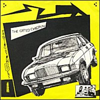

1981 - Whaam! - WHAAM 001 - 7"
Songs:
Painting By Numbers
Lichtenstein Girl
Notes:
"The Gifted Children" was the new name that Dan chose when Ed Ball left the
band, but he used it only on this single and on the "All For Art And Art
For All" VV.AA. compilation. Click here
to read the story of the Gifted Children.
Both songs were included in TVPs' second album ("Mummy Your Not Watching
Me"). In the album "Lichtenstein Girl" was retitled "Lichtenstein Painting". |